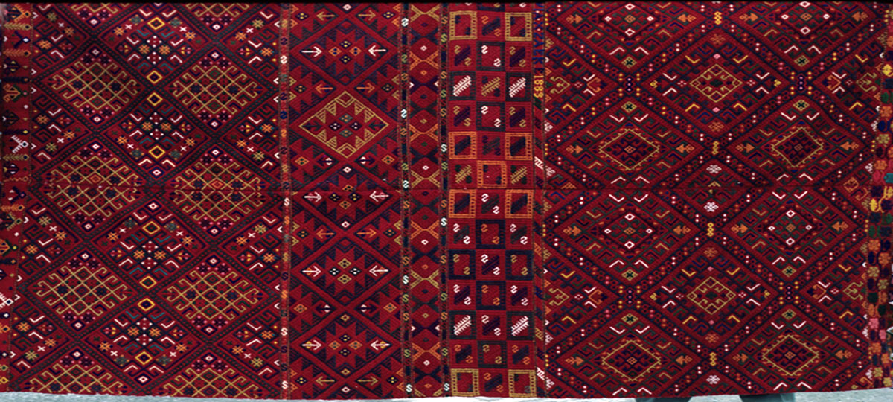

Κιλίμι — 1888
Το κιλίμι του 1888 αποτελεί εξαιρετικό δείγμα υφαντικής τέχνης της Ανατολικής Κρήτης. Με κυρίαρχο κόκκινο φόντο και περίτεχνα ρόμβια μοτίβα, συνδυάζει συμμετρία, ζεστασιά και πλούσια χρωματική ποικιλία.
⬅ Επιστροφή στην ΑρχικήΤο κιλίμι του 1888 αποτελεί εξαιρετικό δείγμα υφαντικής τέχνης της Ανατολικής Κρήτης. Με κυρίαρχο κόκκινο φόντο και περίτεχνα ρόμβια μοτίβα, συνδυάζει συμμετρία, ζεστασιά και πλούσια χρωματική ποικιλία.
⬅ Επιστροφή στην Αρχική